Você conduz a exoneração interna, fecha divergências do EasyJur e trata aditivos. São três filas distintas — não uma esteira única.
Seu papel
Seu trabalho começa quando um caso chega à sua fila (ou uma divergência / aditivo pede conferência) e termina quando o processo anda: documento conferido, andamento registrado, ajuizamento solicitado ou desfecho lançado.
Você conduz a exoneração: checklist, andamentos, prazos, notificações e desfecho.
Você reconcilia divergências do EasyJur — sempre na mão, nunca sozinho.
Você trata aditivos (modelo, ZapSign, ticket de TI).
Você não reabre a análise de cobertura da Inadimplência.
Você não paga a indenização nem liquida a bonificação do escritório.
Você não usa a tela da loja: a imobiliária acompanha o mesmo processo em outro endereço.
Onde começo meu dia?
Minhas Tarefas
É a sua fila. O sistema já separa o que precisa da sua atenção — documentos, prazos e ajuizamento — na ordem sugerida.
Minhas Tarefas
Sua home operacional. No menu: Painel, Minhas Tarefas ★, Contratos em exoneração, Aditivos, Divergências EasyJur, Documentos de apoio e Bonificação.
Tela de trabalhoPróxima ação sugeridaOrdenada por prazo
A fila já considera o prazo de cada pendência. No topo, a Liza destaca a próxima ação sugerida. Comece por ela e siga a ordem: Vence hoje, depois Prazo crítico e, por último, No prazo — salvo orientação operacional específica. Cada card abre o caso (ou a fila certa) para documentos, prazos ou ajuizamento.
avaliza.app/juridico/tarefas
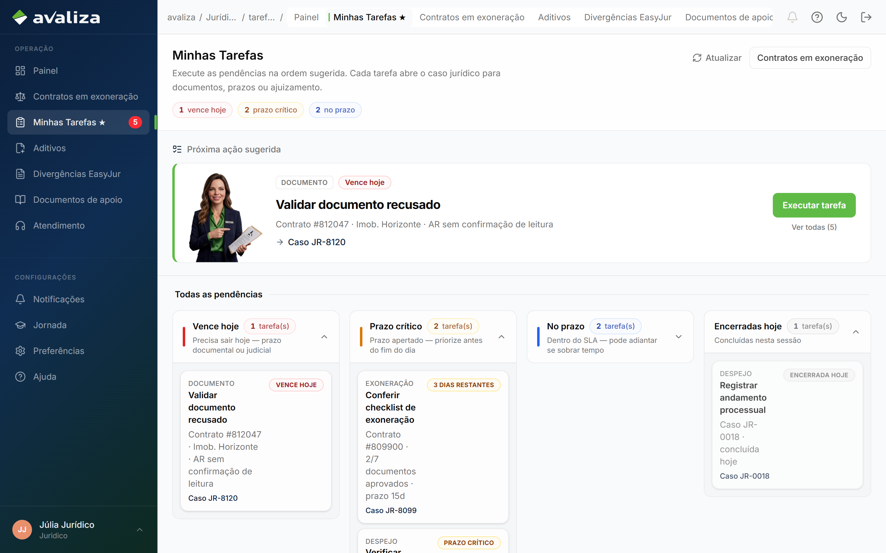
Minhas Tarefas — a fila do seu dia
O que cada card mostra
São os dados da tarefa — o que você usa para saber o que fazer, em qual caso e com que urgência.
No card
O que é
Tipo
Exoneração, Despejo, Aditivo, Documento ou Provisionamento — indica a natureza do trabalho, não a tela da loja.
Nome da tarefa
O trabalho da vez: Validar documento recusado, Conferir checklist, Verificar elegibilidade de ajuizamento etc.
Resumo
Linha curta com o contexto (contrato, imobiliária, o que falta — ex.: “AR sem confirmação de leitura”).
Destino
Para onde o card leva: Caso JR-…, Aditivos, ou o resumo do contrato se ainda não houver caso.
Prazo
Vence hoje, prazo crítico, no prazo. Define o grupo da fila.
Clique no card: o caso (ou a fila de aditivos) abre já no ponto certo. Contratos em exoneração é a carteira completa — use para consultar, não para escolher o próximo da vez.
Fila vazia: a Liza avisa que não há pendência e aponta a carteira de contratos em exoneração. Encerradas hoje ficam no fim da tela.
Trabalhar um caso
A atividade central da exoneração. EasyJur e aditivos têm filas próprias — não abrem um caso JR e não misturam com este dossiê.
Abra o caso pela sua fila
Clique no card em Minhas Tarefas. O caso abre já na aba do trabalho (anexos, andamentos ou detalhes, conforme o tipo da tarefa).
Percorra as abas
Detalhes, Andamentos, Anexos, Prazos legais e Notificações. Cada uma tem um papel — a lista completa está na seção seguinte.
Confera o checklist e registre o que aconteceu
Sete documentos da exoneração. Recuse o que estiver fora do critério. Registre andamento, anexe e envie notificação pelos botões do caso.
Decida o próximo passo irreversível só quando as travas liberarem
Solicitar ajuizamento e registrar desfecho entram na linha do tempo com o seu nome. Não faça isso no treino da Liza — e, no dia a dia, só depois das travas verdes.
avaliza.app/juridico/JR-0024
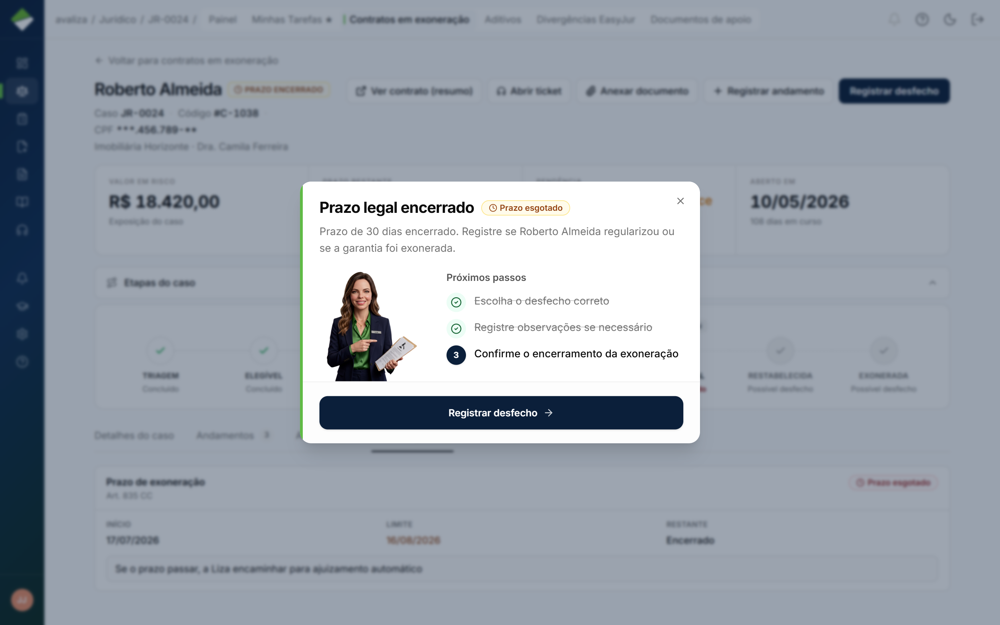
Caso JR-0024 — identidade, prazos e o trabalho do dia
avaliza.app/juridico/JR-0024
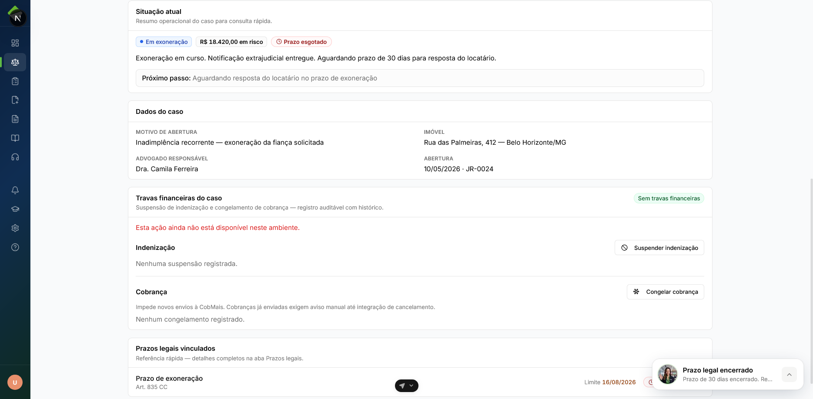
Percurso no caso — abas e CTAs
avaliza.app/juridico/JR-0024
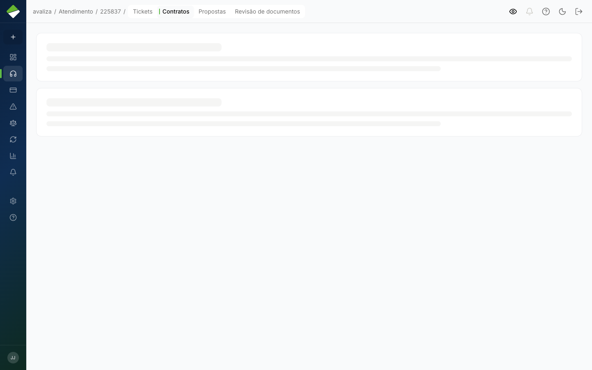
Exoneração no caso — checklist e próximos passos
Checklist documental da exoneração (7 documentos)
Sem o conjunto completo, o ajuizamento fica bloqueado. Procuração e notificação de ausência exigem o modelo oficial da plataforma — outro formato é recusado.
Comprovante de endereço
Contrato de locação
Procuração (modelo oficial)
Identificação do locador
Confirmação de recebimento (AR)
Notificação de ausência de garantia (modelo oficial)
Declaração de débito
Critério de cada documento (abrir se for conferir)
Documento
O que conferir
Recusa típica
Comprovante de endereço
Em nome do locador (não da imobiliária). Validade máxima 60 dias.
Nome da imobiliária ou mais de 60 dias.
Contrato de locação
Vigente ou rescindido conforme o caso. Partes, imóvel e valores legíveis. Sem páginas faltando.
Incompleto, ilegível ou desatualizado.
Procuração
Só o modelo oficial (ícone alaranjado). Outros formatos caem automaticamente.
Fora do modelo Avaliza.
Identificação do locador
CPF/RG (PF) ou contrato social + representante (PJ). Deve bater com a procuração.
Documento do inquilino no lugar do locador.
Confirmação de recebimento (AR)
AR Online (leitura digital) ou assinatura de recebimento físico — não exija só um dos dois.
Falta leitura no AR Online ou comprovante assinado.
Notificação de ausência
Modelo oficial. Destinatário correto (locatário). Erro de endereço invalida o prazo de 30 dias.
Pessoa errada ou fora do modelo.
Declaração de débito
Valores e competências coerentes com a inadimplência coberta. Status “Aprovada” na Inadimplência não é pagamento efetuado — conferir com o Financeiro antes de ajuizar.
Valores divergentes ou débito já quitado.
Abas do detalhe do caso
As cinco abas ficam abaixo do cabeçalho. A imobiliária não vê Prazos legais; lá Anexos aparece como Documentos. O desfecho não é uma aba — quando o prazo de 30 dias encerra, o botão fica no cabeçalho.
avaliza.app/juridico/JR-0024
Detalhes do caso — situação atual, dados e travas
Aba
Para que serve
Quando aparece
Detalhes do caso
Situação atual (status, valor em risco, próximo passo), dados do caso (motivo, imóvel, advogado, abertura), travas financeiras e um recorte dos prazos. É a aba inicial.
Sempre.
Andamentos
Linha do tempo do processo. Você registra, edita e exclui o que aconteceu (petição, notificação, aditivo). Dá para ocultar um registro da imobiliária. Badge = quantidade.
Sempre.
Anexos
Dossiê: petições, notificações e laudos. Anexar, baixar e controlar o que a loja vê. Badge = quantidade.
Sempre. Na loja o rótulo é Documentos.
Prazos legais
Prazos do caso (início, limite, restante) com a base legal — por exemplo, prazo de exoneração. Badge laranja se estiver urgente ou esgotado.
Só para analista interno. A imobiliária não vê esta aba.
Notificações
Histórico de envios ao locatário e à imobiliária (destinatário, documento, data, status). Enviar o kit não é nesta aba — é pelos botões do cabeçalho.
Sempre. Na loja, só o que a imobiliária recebeu.
avaliza.app/juridico/JR-0024
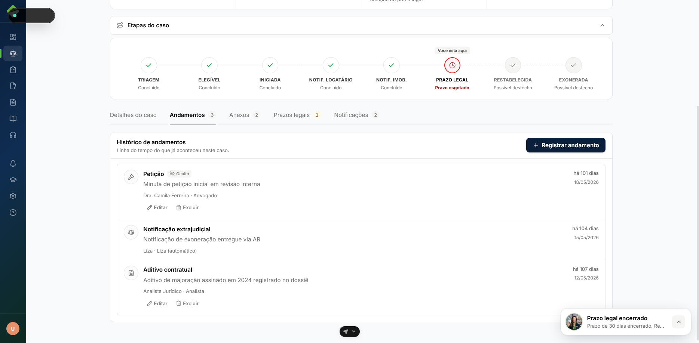
Andamentos — o que já aconteceu no processo
avaliza.app/juridico/JR-0024
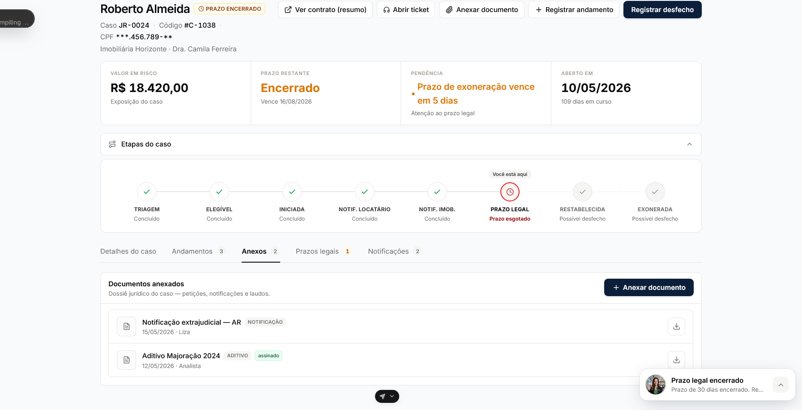
Anexos — petições, notificações e laudos
avaliza.app/juridico/JR-0024
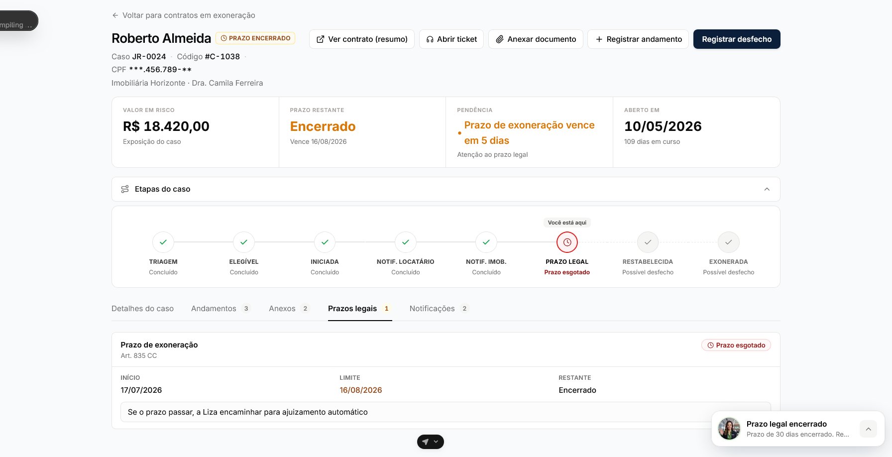
Prazos legais — início, limite e o que resta
avaliza.app/juridico/JR-0024
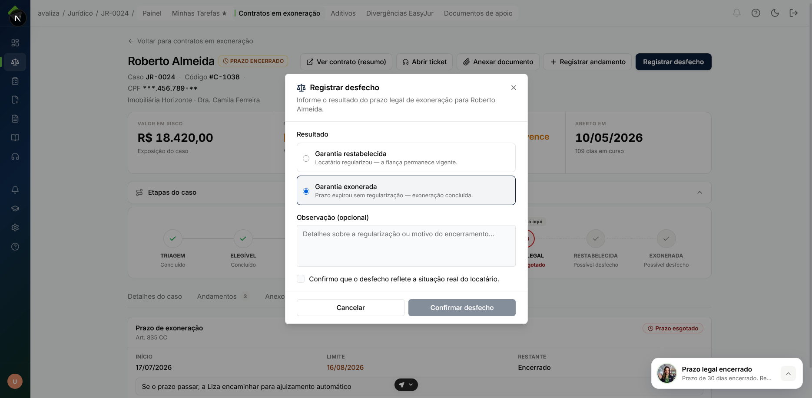
Registrar desfecho — garantia restabelecida ou exonerada
Como usar as abas no dia a dia
Comece em Detalhes
Leia a situação, o próximo passo e as travas. Se o prazo de 30 dias já esgotou, o desfecho está no cabeçalho — não numa aba.
Registre em Andamentos
Cada evento do processo fica na timeline. O que a loja não deve ver, oculte.
Anexos no dossiê
Petição, AR e aditivo entram aqui. Anexe o que ainda falta e recuse o que estiver fora do critério.
Prazos legais
É aqui que o prazo da exoneração aparece com início, limite e restante.
Notificações
Confira se locatário e imobiliária receberam o kit. Enviar é pelos botões do caso.
Os tipos que aparecem na fila. Cada card leva ao caso (com a aba certa) ou à fila de aditivos. EasyJur e bonificação não entram nesta lista — têm tela própria no menu.
Tarefas da sua fila
Sua tarefaDocumento
Validar documento recusado
Quando aparece
Um anexo da exoneração foi recusado (por exemplo, AR sem confirmação de leitura) e precisa da sua conferência.
O que fazer
Abra o caso na aba Anexos. Confira o arquivo contra o critério. Peça correção ou aprove se já estiver certo.
Para onde o card leva
Caso jurídico, aba Anexos.
Sua tarefaExoneração
Conferir checklist de exoneração
Quando aparece
O caso está em exoneração e o dossiê ainda não fechou os 7 documentos.
O que fazer
Percorra os itens. Recuse o que estiver fora do modelo ou do critério. Sem o conjunto completo, ajuizar fica bloqueado.
Para onde o card leva
Caso jurídico, aba Anexos.
Sua tarefaDespejo
Verificar elegibilidade de ajuizamento
Quando aparece
O caso parece pronto: checklist caminhando, indenização no radar, prazo em vista.
O que fazer
Confira as travas no cabeçalho antes de clicar em Solicitar ajuizamento. Se uma falhar, o sistema impede — não force.
Para onde o card leva
Caso jurídico, aba Andamentos.
Irreversível
Solicitar ajuizamento entra na linha do tempo com o seu nome. Não registre no treino da Liza.
Sua tarefaAditivo
Conferir aditivo pendente
Quando aparece
Há um aditivo aguardando (por exemplo, correção de endereço no ZapSign).
O que fazer
Trabalhe na fila de Aditivos — não no caso JR. Siga o modelo oficial, o PDF e a assinatura externa.
Para onde o card leva
Tela Aditivos, não o dossiê de exoneração.
Sua fila · Financeiro paga
Provisionar pagamento da exoneração
Quando aparece
O caso já está na via de exoneração e há valores a provisionar.
O que o card faz
Abre o caso na aba Detalhes, para você ver o contexto.
Quem informa data e comprovante
O Financeiro. Você não liquida NF nem marca o pagamento da indenização.
Critério a validar com a operação: se esta tarefa é só lembrete na sua fila ou se você dispara o pedido ao Financeiro. O pagamento em si não é desta mesa.
Fora da fila de tarefas — telas próprias no menu
Divergências EasyJur e Bonificação não aparecem como card de Minhas Tarefas. Você as abre pelo menu. Tickets do setor ficam em Atendimento.
Qual decisão tomar?
Não há um único botão de “aprovar o caso”. As decisões mudam conforme a fila: exoneração no dossiê, EasyJur na reconciliação, aditivo na fila própria.
No caso de exoneração
Registrar andamento
Quando usar
Quando algo aconteceu no processo e precisa ficar na linha do tempo (petição, notificação, contato, aditivo).
O que o sistema exige
Abrir o registro no caso. Dá para ocultar da imobiliária o que ela não deve ver.
O que acontece depois
O evento entra em Andamentos. O status do caso não muda só por registrar.
Recusar ou pedir documento
Quando usar
Quando o arquivo está ilegível, fora do modelo, no nome errado ou incompleto.
O que o sistema exige
Conferência item a item. Procuração e notificação de ausência só no modelo oficial.
O que acontece depois
O item fica recusado até chegar a correção. Sem o checklist completo, ajuizar continua bloqueado.
Enviar notificação
Quando usar
Quando o próximo passo do cabeçalho pede kit ao locatário ou à imobiliária.
O que o sistema exige
O envio é pelos botões do caso, não pela aba Notificações (a aba só mostra o histórico).
O que acontece depois
O envio aparece na aba Notificações, com destinatário, documento, data e status.
Solicitar ajuizamento
Quando usar
Quando as travas estão verdes e o caso está pronto para o protocolo. A loja acompanha o mesmo processo na tela dela — você não “entrega” o dossiê à mão.
O que o sistema exige
Quatro condições na orientação da Liza: checklist documental completo, indenização paga (se houve aprovação), sem pendência documental ativa e sem divergência EasyJur bloqueante. O sistema também pode bloquear se houver acordo CobMais vigente ou débito já quitado.
O que acontece depois
O caso passa a Ajuizado. A ação é irreversível e entra na linha do tempo com o seu nome.
Indenização paga é necessária, mas não basta: checklist incompleto bloqueia. Confira as travas no próprio caso antes de clicar.
Registrar desfecho
Quando usar
Quando o prazo de 30 dias da exoneração encerra. O botão fica no cabeçalho, não numa aba.
O que o sistema exige
Escolher garantia restabelecida (locatário regularizou) ou garantia exonerada, com o motivo.
O que acontece depois
O caso segue o desfecho escolhido. Também é irreversível.
Na fila EasyJur
A reconciliação é sempre humana. O sistema não fecha divergência sozinho. Não abre um caso JR e não mistura com aditivo.
Corrigir e sincronizar novamente
Quando usar
Quando o dado de origem está errado (status, tipo de ação ou ID do contrato) e dá para ajustar.
O que o sistema exige
Informar o valor correto e enviar. Se ainda ficar em conflito, o registro continua na fila — confira e tente de novo.
O que acontece depois
Se a correção resolver, a divergência some da fila.
Justificar sem corrigir
Quando usar
Quando a divergência não deve sincronizar — você registra o motivo e fecha na mão.
O que o sistema exige
Justificativa preenchida.
O que acontece depois
A divergência sai da fila. O caso JR, se existir, não é criado nem alterado por este clique.
Os três tipos de divergência que você vai ver
Sem correspondência encontrada — o EasyJur trouxe um registro que a Avaliza não mapeou.
Rejeitado na importação — a carga recusou o registro; leia o motivo na tela.
Conflito com um caso já existente na Avaliza — bateu com um JR que já existe; decida qual fonte vale.
Na fila de aditivos
Seguir o fluxo até a assinatura
Quando usar
Mudança formal de valor, prazo, garantia ou partes.
O que o sistema exige
Ticket de atendimento, modelo oficial no Drive, PDF anexado, assinatura no ZapSign (fora desta tela) e, depois de assinado, ticket para TI vincular o PDF ao contrato.
O que acontece depois
O aditivo segue independente da exoneração. ZapSign e Drive são ferramentas externas.
Devolver ao solicitante
Quando usar
Quando o pedido da imobiliária está incompleto ou errado.
O que isso significa
Devolver à imobiliária para correção — não é recusa definitiva do aditivo.
Passos do aditivo (abrir se for executar)
Abrir ticket de atendimento — registre a demanda (valor, prazo, garantia ou partes).
Redigir no Drive Jurídico — use o modelo oficial. Não envie PDF solto sem passar pelo modelo.
Exportar PDF e anexar — no ticket ou no registro do aditivo.
Assinatura no ZapSign — autenticação avançada e testemunhas quando exigido; a assinatura não acontece dentro desta tela.
Ticket TI pós-assinatura — para vincular o PDF assinado ao contrato no sistema.
O que acontece depois
Depois de agir, o sistema move o caso. Você não precisa “entregar” o dossiê à loja à mão.
Você solicita ajuizamento com as travas verdes
↓
O caso fica Ajuizado. A imobiliária vê o mesmo processo na tela dela.
Você registra o desfecho
↓
Garantia restabelecida ou exonerada. O registro é irreversível.
Você recusa um documento
↓
O item fica pendente. Sem o checklist completo, ajuizar continua bloqueado.
Você fecha uma divergência EasyJur
↓
Sai da fila EasyJur. Não cria e não anda o caso de exoneração.
Status que você vai encontrar
São os nomes que aparecem nos badges e na carteira — não os códigos internos. A imobiliária vê alguns rótulos um pouco diferentes (ex.: “Em revisão documental” no lugar de “Aguardando documentos”).
Status exibido
O que significa
O que você precisa fazer
Em exoneração
O processo jurídico interno está em curso.
Andar checklist, andamentos, prazos e notificações.
Aguardando documentos
Falta peça do dossiê.
Conferir o que chegou; recusar o que estiver fora do critério; cobrar o que falta.
Aguardando ajuizamento
Documentação já caminhou; o próximo passo é o protocolo — se as travas liberarem.
Conferir elegibilidade. Só então Solicitar ajuizamento.
Ajuizado
O ajuizamento foi solicitado e registrado.
Acompanhar andamentos. Não dá para desfazer o clique.
Acordo CobMais
Há acordo vigente. O ajuizamento fica bloqueado enquanto o acordo estiver em vigor.
Acompanhar. Não force o ajuizamento.
Exoneração suspensa
A via jurídica foi suspensa — em geral porque o débito foi quitado.
Consulta. Não há causa para ajuizar.
Em ação de despejo
O despejo está em curso.
Registrar andamentos e prazos do despejo.
Encerrado
O caso jurídico fechou.
Consulta. Sai da fila de trabalho.
Na bonificação os status são outros: A conferir (você confere), Conferida (segue ao Financeiro), Liquidada (eles pagaram) e Divergente (abre o caso, ajusta e volta para conferir). Você não liquida por aqui.
Todas as telas do setor
Só o que existe hoje no menu da analista e no detalhe do caso. Abrir uma tela de consulta não avança o caso. EasyJur, aditivos e bonificação são filas próprias — não misture com o dossiê JR.
Menu da analista — onde você trabalha
Trabalho
Minhas Tarefas
Sua fila. Comece o dia aqui. Grupos: Vence hoje, Prazo crítico, No prazo; no fim, Encerradas hoje. Atalho no topo para Contratos em exoneração.
Jurídico → Minhas Tarefas ★
avaliza.app/juridico/tarefas
Minhas Tarefas
Trabalho
Detalhe do caso (aberto pela tarefa)
Onde você confere as abas, anexa, registra andamento, envia notificação, solicita ajuizamento e registra desfecho.
Aberto a partir do card da fila
avaliza.app/juridico/JR-0024
Detalhe do caso — cabeçalho, etapas e abas
Trabalho
Divergências EasyJur
Fila própria de reconciliação. Corrigir e sincronizar, ou justificar sem corrigir. Não abre um JR.
Jurídico → Divergências EasyJur
avaliza.app/juridico/divergencias-easyjur
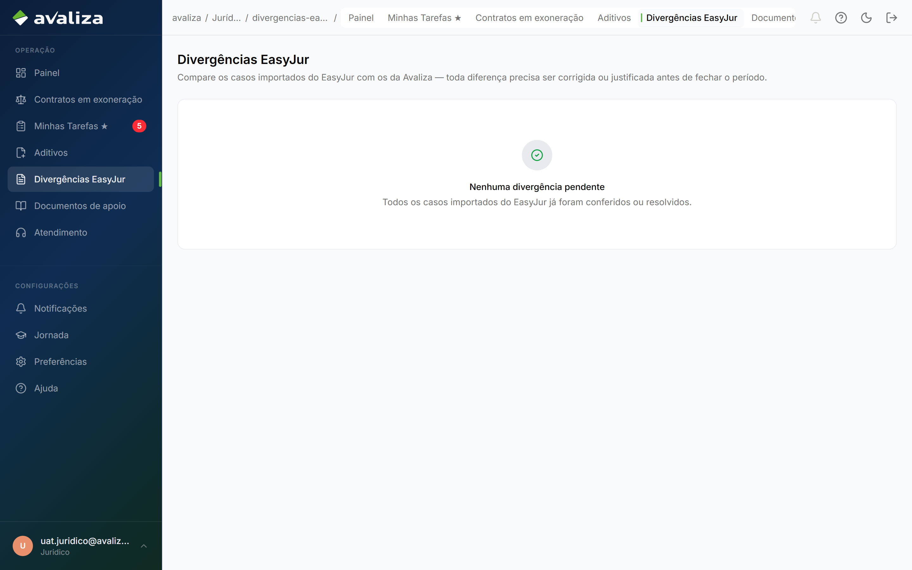
Fila de divergências EasyJur
Trabalho
Aditivos
Mudança formal de valor, prazo, garantia ou partes. Assinatura no ZapSign; ticket de TI depois. Independente da exoneração.
Jurídico → Aditivos
avaliza.app/juridico/aditivos
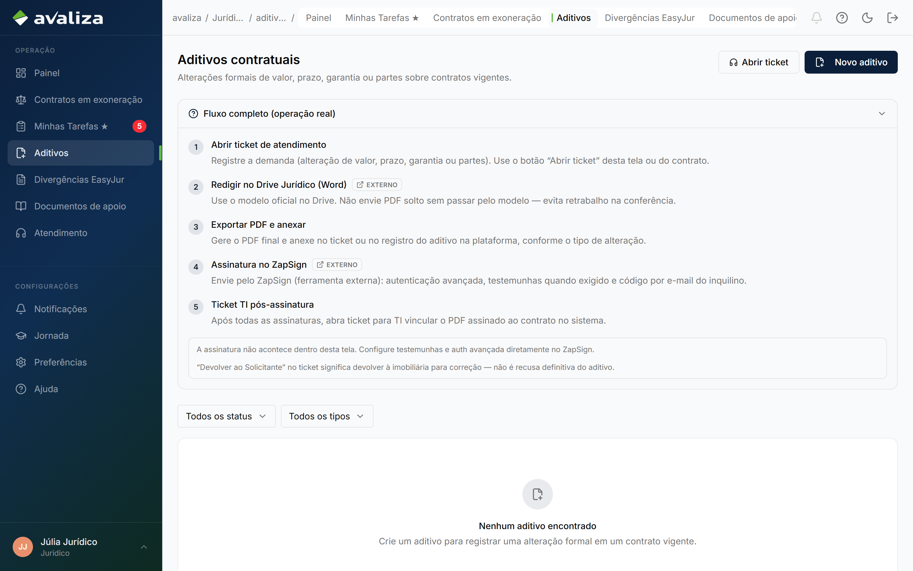
Fila de aditivos
Menu da analista — onde você consulta ou confere
Consulta
Contratos em exoneração
Carteira completa. Não é a fila do dia — abrir um caso daqui é consulta, a menos que você já tenha tarefa nele.
Jurídico → Contratos em exoneração
avaliza.app/juridico
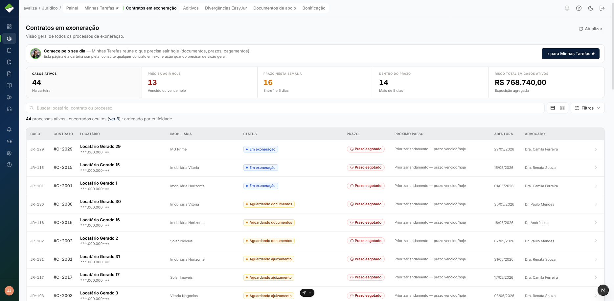
Carteira de contratos em exoneração
Consulta
Painel
Números do dia (volume, prazos, produção). Não substitui a fila: o próximo caso continua em Minhas Tarefas.
Jurídico → Painel
avaliza.app/juridico/dashboard
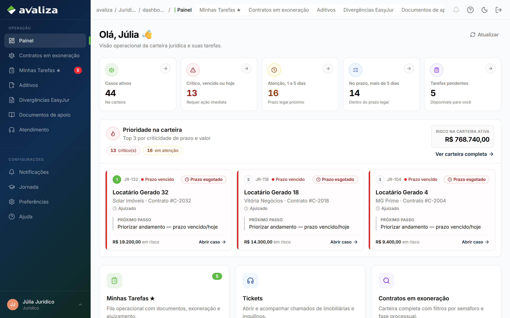
Painel do setor
Consulta
Documentos de apoio
Biblioteca de modelos (procuração, notificações). Não é a fila e não fecha o caso — é onde você pega o modelo oficial.
Jurídico → Documentos de apoio
avaliza.app/juridico/documentos-de-apoio
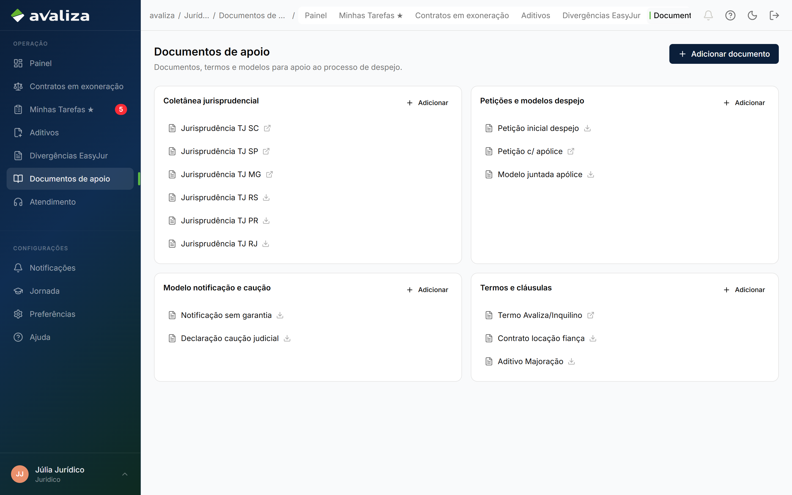
Documentos de apoio
ConferênciaFinanceiro liquida
Bonificação
Você confere a bonificação do escritório parceiro (exoneração concluída, ajuizamento, acordo, despejo, encerramento). O Financeiro liquida. Se estiver divergente, abra o caso, ajuste e volte para conferir — não tente pagar por aqui.
Jurídico → Bonificação
avaliza.app/juridico/bonificacao
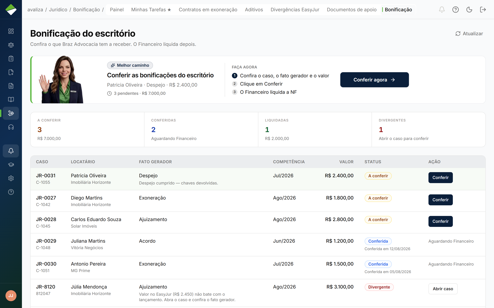
Bonificação do escritório — conferir, não liquidar
Treinamento — não é a fila do dia
Treino
Jornada
Tela de treinamento guiado pela Liza, no sistema real. Não avança caso, não registra ajuizamento nem desfecho. Detalhes na seção Jornada de treinamento.
Configurações → Jornada
Tela da imobiliária — não é a sua mesa
A loja acompanha o mesmo processo em outro endereço. Não use essa tela como fila do dia e não peça à imobiliária que entre em Minhas Tarefas.
Imobiliária
Jurídico da loja
Acompanhamento e documentos de apoio do lado da imobiliária. Ajuizamento que a loja vê não substitui o seu dossiê.
Jornada de treinamento
Treino no sistema real, guiado pela Liza. Não é Minhas Tarefas e não substitui a operação do dia.
TreinoCerca de 15 minProgresso salvo
Esta tela não ajuíza nem registra desfecho. A jornada pede que você abra filas e casos de verdade, mas as decisões críticas são mini-casos — você nunca registra uma ação irreversível.
avaliza.app/jornada
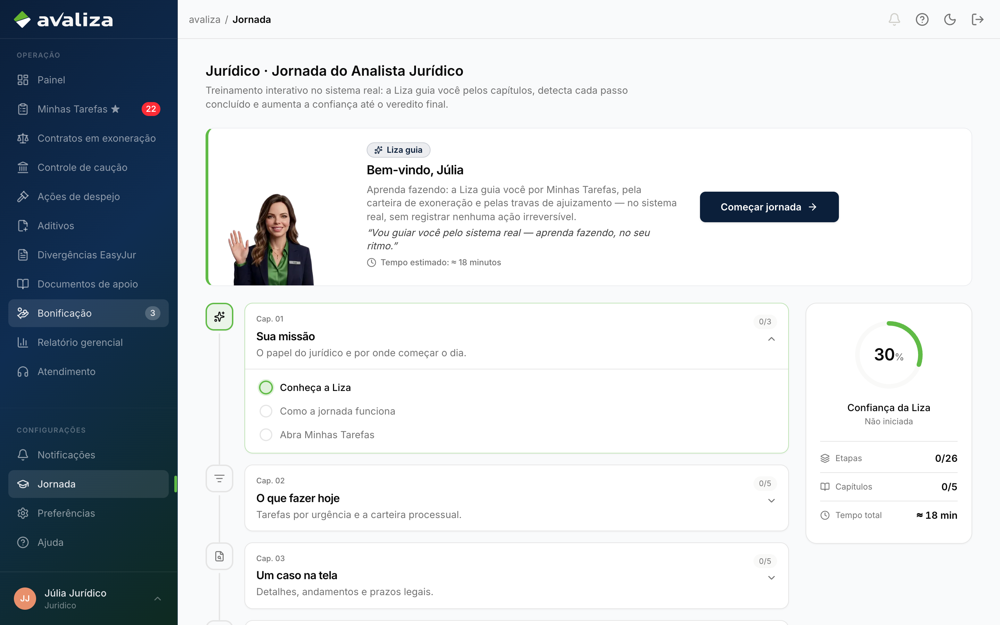
Jornada do Analista Jurídico — capítulos, confiança e o botão para começar ou retomar
Onde fica e como usar
No menu: Configurações → Jornada. Título na tela: Jurídico · Jornada do Analista Jurídico.
Começar jornada (ou Retomar jornada, se você já tinha começado) leva você às telas reais. A Liza acompanha cada passo e detecta sozinha quando você conclui.
A confiança começa em 30% e sobe até 100%. Ao terminar, a tela libera o certificado.
Pode pausar a qualquer momento: o progresso fica salvo e você volta por esta mesma tela.
Os cinco capítulos
A timeline à esquerda mostra o que vem a seguir. À direita, a barra de progresso (confiança, etapas, capítulos e tempo estimado).
Capítulo
O que você pratica
1. Sua missão
O papel do jurídico e por onde começar o dia.
2. O que fazer hoje
Tarefas por urgência e a carteira de exoneração.
3. Um caso na tela
Detalhes, andamentos e prazos legais.
4. Decisões críticas
Ajuizamento e bifurcações — em mini-casos, sem registrar ação irreversível.
5. Ferramentas e governança
Aditivos, EasyJur e o certificado ao concluir.
Quando outro time assume
Você conduz a via jurídica interna. O restante da operação continua com o dono de cada etapa.
Inadimplência
Entra antes de você: analisa a cobertura. Você recebe o caso já com essa decisão feita.
Não reabra se a cobertura cabe. Encaminhar para o jurídico não é conduzir a exoneração — isso é seu.
Financeiro
Paga a indenização já aprovada e liquida a bonificação que você conferiu. Também provisiona valores da exoneração.
Status “Aprovada” na Inadimplência não significa pagamento efetuado — confira antes de ajuizar.
Imobiliária
Acompanha o mesmo processo na tela dela, envia documento e solicita aditivo. Não usa a sua fila.
Devolver um aditivo ao solicitante é devolver à loja para correção, não recusar de vez.
Atendimento
Entra quando alguém abre um chamado triado para o jurídico.
O ticket não substitui o dossiê nem a fila EasyJur. A decisão continua no caso ou na tela certa.
TI (via ticket)
Entra depois da assinatura do aditivo: vincula o PDF assinado ao contrato.
Você abre o chamado; não faz a vinculação no lugar deles.
De quem recebo e para quem passo
Em dez segundos: a Inadimplência dispara a via jurídica quando o caso pede; você conduz; a loja vê o mesmo processo em paralelo.
InadimplênciaCaso pede via jurídica
AtendimentoChamado vira contexto
enviam o trabalho ↓
JurídicoVocê conduz exoneração, EasyJur e aditivos
em paralelo e depois ↓
ImobiliáriaAcompanha o mesmo processo
FinanceiroIndenização e bonificação
Quando algo sair do fluxo esperado
Situações que o produto já trata. Se a tela bloquear, leia o motivo no próprio caso antes de procurar outro time.
Não consigo solicitar ajuizamento
O sistema impede se faltar checklist, se a indenização aprovada ainda não foi paga, se há pendência documental, divergência EasyJur bloqueante, acordo CobMais vigente ou débito já quitado.
O que fazer. Leia a trava no caso. Complete o dossiê ou aguarde o acordo. Não force o clique — e não registre ajuizamento no treino da Liza.
Documento recusado ou fora do modelo
Procuração e notificação de ausência só no modelo oficial. Comprovante em nome da imobiliária, AR sem leitura e identificação do inquilino no lugar do locador são recusas típicas.
O que fazer. Recuse com o motivo. Peça o arquivo certo. Sem o conjunto, ajuizar continua bloqueado.
Indenização “aprovada” mas ainda não paga
O status na Inadimplência não é comprovante de pagamento. A declaração de débito precisa bater com o que o Financeiro efetivamente pagou.
O que fazer. Confira com o Financeiro antes de ajuizar. A trava de indenização é do servidor no momento da solicitação.
Acordo CobMais ativo
O status pode aparecer como Acordo CobMais. Enquanto o acordo estiver vigente, o ajuizamento fica bloqueado.
O que fazer. Acompanhar. Ajuizamento prematuro queima a chance de acordo.
Divergência EasyJur não some depois de corrigir
A correção foi aplicada, mas o registro continua como sem correspondência, rejeitado ou em conflito.
O que fazer. Confira status, tipo e ID do contrato e tente de novo — ou justifique sem corrigir, se a sincronização não deve acontecer.
Aditivo devolvido
“Devolver ao solicitante” no ticket manda de volta à imobiliária.
O que fazer. Oriente a correção. Não trate como recusa definitiva.
Bonificação divergente
O valor ou o fato gerador não fechou na conferência.
O que fazer. Abra o caso, ajuste e volte para conferir. Não tente liquidar — isso é do Financeiro.
Chamado no Atendimento
Alguém tem dúvida ou bloqueio ligado a um caso, aditivo ou EasyJur.
O que fazer. Responder o ticket. A decisão continua no dossiê ou na fila certa, não no chamado.
A loja pergunta por Minhas Tarefas
Essa tela é da Avaliza. A imobiliária acompanha em Minha imobiliária → Jurídico.
O que fazer. Oriente o URL certo. Não compartilhe a sua fila.